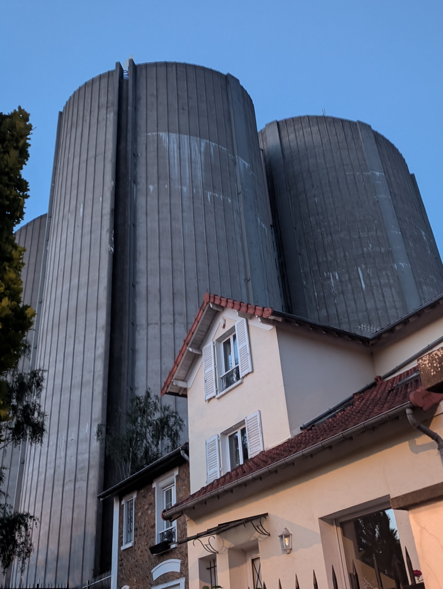

13 juin 2026 · France
Réservoir de Saint-Maur-des-Fossés
Гуляя по берегу Марны, я заметил необычное сооружение...





Текст будет добавлен следующим шагом.
Гуляя по берегу Марны, я заметил необычное сооружение...

Текст будет добавлен следующим шагом.